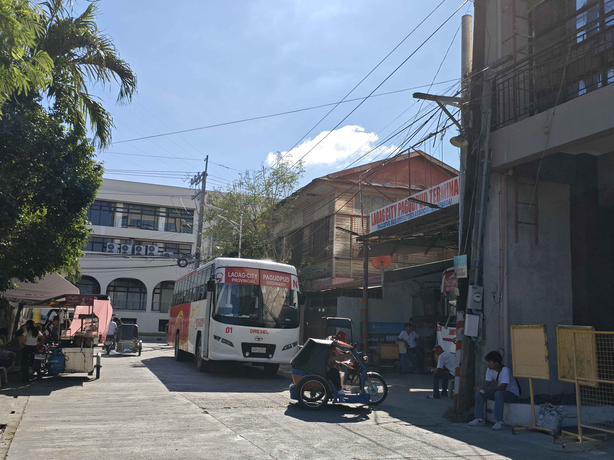
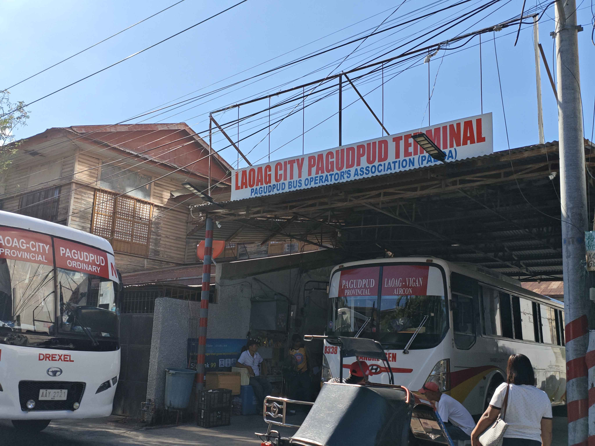
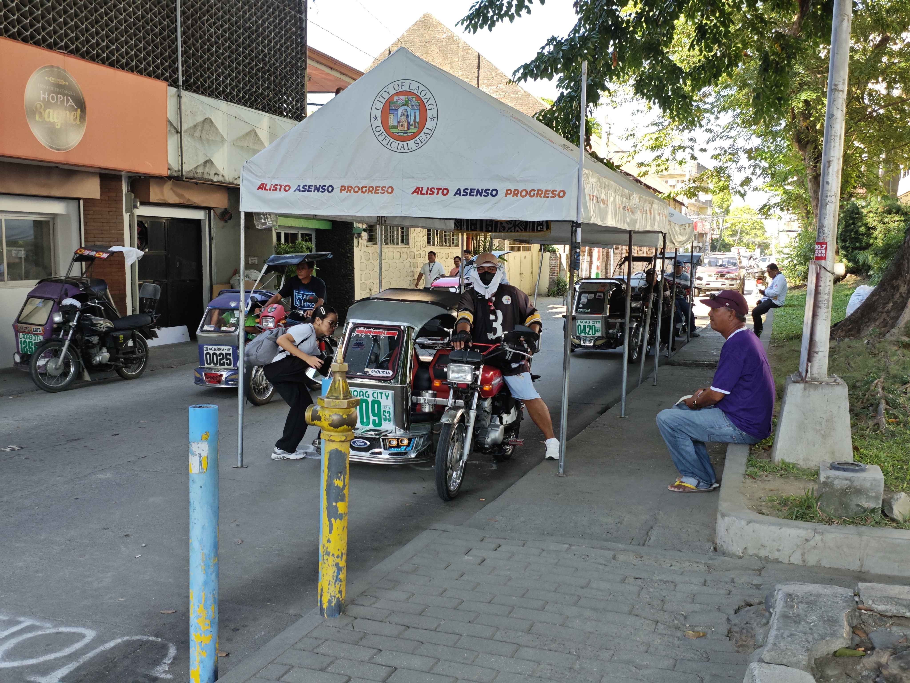
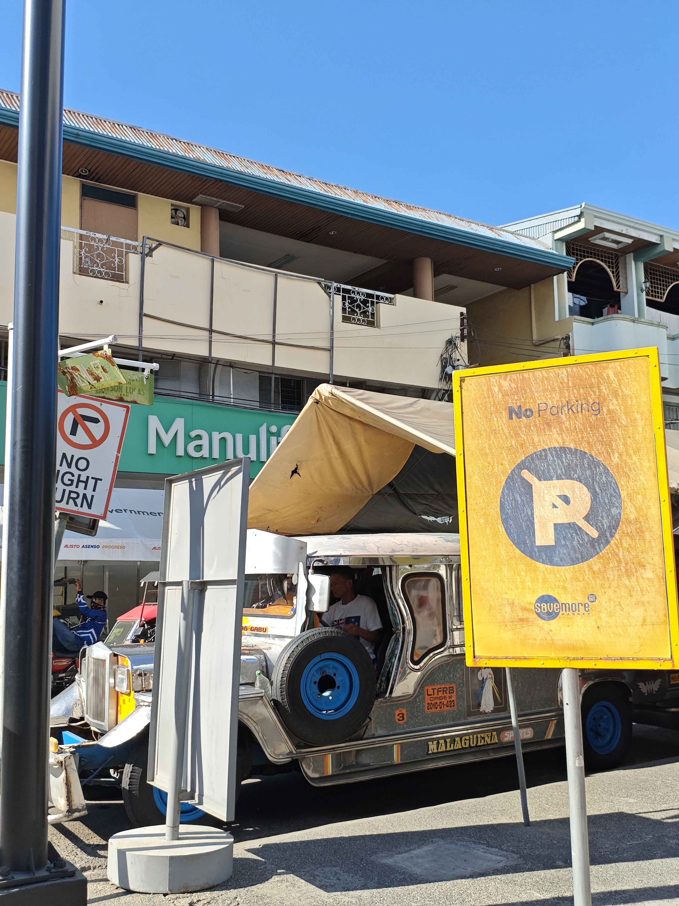
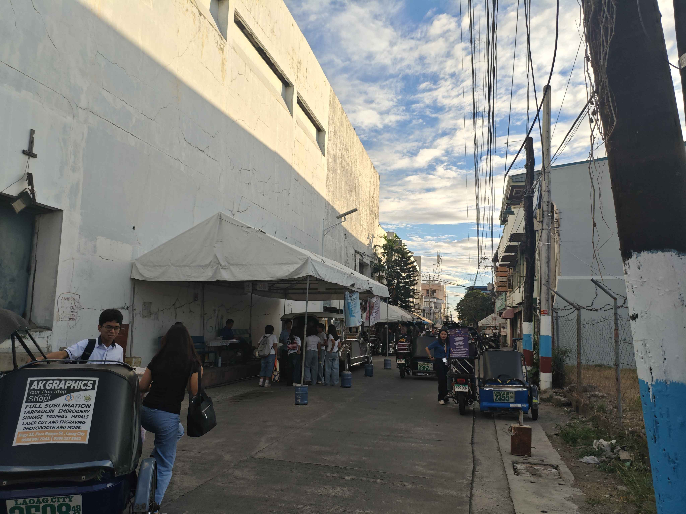

03 / Local commute photos
See the journey
for yourself.
Original photographs from the project showing public-transport vehicles, waiting areas, streets, and everyday commuting conditions.






Photos are original project materials. Captions describe only what is visible in the photographs and are not intended to identify a specific route, fare, schedule, or operator.